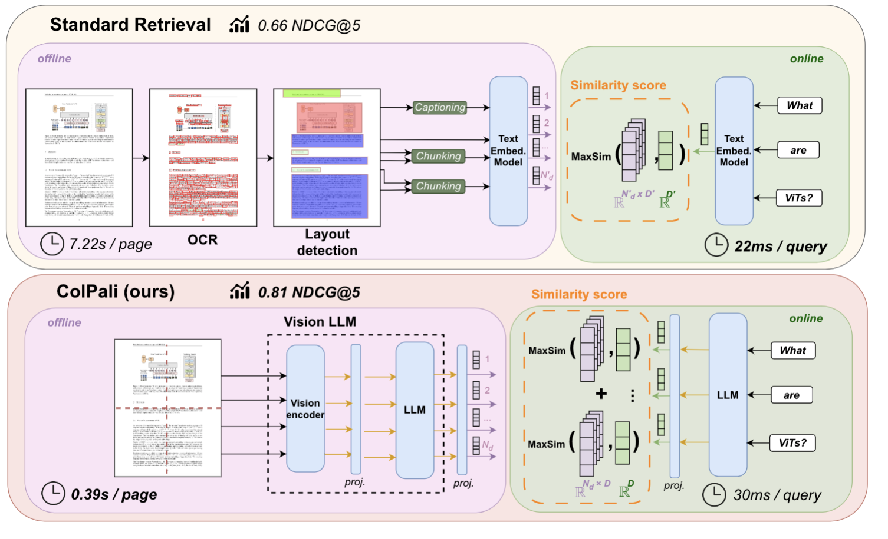
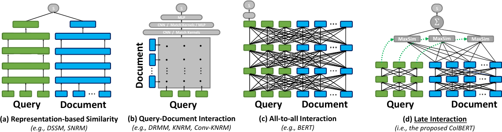
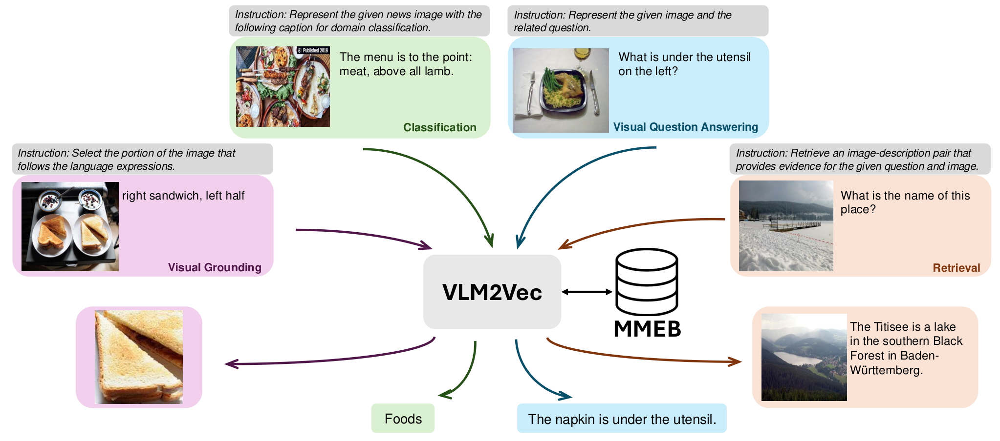
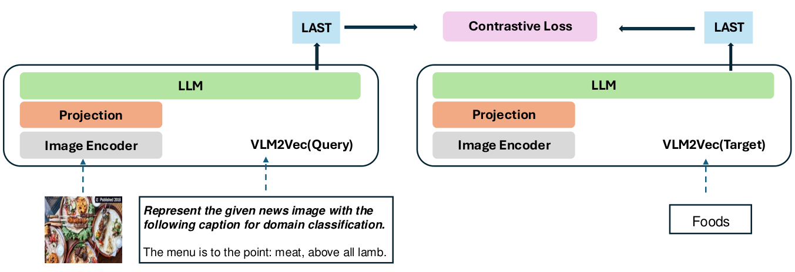

第 42 章 多模态 RAG 与文档智能
💡 本章导读
RAG（Retrieval-Augmented Generation，检索增强生成）是 2023 年以来落地最广的 LLM 应用模式，而 2024 年之后它遭遇了共同的墙：企业知识的最主要载体是 PDF——扫描件、财报、论文、合同、幻灯片，它们的价值一半藏在版面、表格与图表里。传统"OCR→文本切块→向量库"的管线在这一步大量失血。本章从第一性原理出发回答三个问题：文本 RAG 为什么不够（第 1 节）；能不能直接"用视觉检索页面"（第 2 节，ColPali 一派的 late interaction）；多模态 embedding 如何统一图文空间（第 3 节）。随后给出端到端架构（第 4 节）、长文档策略（第 5 节）、生产工程（第 6 节）与完整代码（第 7 节）。本章是第 22 章（文档理解）、第 12 章（对比学习）、第 39 章（部署）、第 40 章（评测）四条线的会师点：视觉编码器当检索器用、部署成本账重新算、评测用 ViDoRe 说话。
1.为什么文本 RAG 不够：文档的真实形态是"版面"
标准文本 RAG 的管线是"解析→切块→编码→检索→生成"，隐含着一个致命假设：文档是线性的语义序列，切完块信息还在。对纯文本小说这个假设成立；对 PDF 它几乎处处失效。PDF 本质上是排版指令集（把字符和图形"画"在坐标上），而非语义流——阅读顺序要靠版面分析还原；表格是坐标画线而非结构化数据；图表是矢量/位图，文本流里连一个字符都没有；扫描件是图片，文本流是空的。于是所有"重结构"的信息都要经过一条 OCR 管线（版面检测→方向校正→文字识别→表格还原→阅读顺序重排）才能进入向量库。这条管线的问题不是"不够准"，而是结构性的，可总结为三宗罪：
第一宗罪：信息丢失。OCR 管线只保留"文字"这一种模态：图表的走势与对比关系、印章、签名、颜色语义（亏损标红）、空间邻近关系（"上图下注"的对应）在抽取过程中全部蒸发。一个典型的实证：财报问答中"2023 年第三季度营收同比增速是多少"这类题，答案在柱状图里——文本 RAG 检索到的可能是图表标题的一行字，生成模型只能编（第 37 章的幻觉机制在此被检索失败直接引爆）。DocVQA（arXiv:2007.00387）基准集中体现了这一点：其问题大量依赖版面结构（"这张表里哪一列是税额"、"左上角logo是什么公司"），早期"OCR+文本模型"方案与端到端视觉方案的能力差距，本质是"中间表示丢了多少"的差距。
第二宗罪：版面破坏。多栏论文被按 X 轴坐标"横向"切碎（左右栏文字交错成乱码序列）；表格被拍平成"单元格文本流"，行列对应关系消失——"利润 1.2 亿"这种句子里，"利润"和"1.2 亿"可能分属两个切块；页眉页脚、脚注、水印混入正文污染切块。切块（chunking）假设"连续文本块=连续语义"，在版面文档上这个假设系统性失效，检索命中的是语义上完整的知识被切碎后的残片。
第三宗罪：错误级联。管线是串联的：版面检测错一个区域，后续识别、切块、检索、生成全错；识别错一个数字，答案就错一个数字，而且错误被下游的"流畅生成"包装得毫无破绽。更贵的是工程账：五段管线、五套模型、五份运维，任何一段换版本都要重跑全量索引；延迟叠加（版面 100ms+识别 300ms+切块+编码），单页处理成本让"百万页级"的索引预算失控。第一性原理的追问：人类读 PDF 根本不需要先"转成文本"——我们直接看渲染后的页面。检索模型能不能也直接看？这就是视觉文档检索的出发点。
2.视觉文档检索：ColPali 与 late interaction
ColPali（arXiv:2407.01449）把文档检索重构为一句话：把每页 PDF 渲染成图像，用一个视觉语言模型（PaliGemma）把页图编码成一组 patch 级向量，查询与页面的匹配发生在"查询 token 向量"与"页面 patch 向量"之间——没有 OCR、没有版面分析、没有切块。它的检索质量来自一个朴素的观察：现代 VLM 的视觉塔（SigLIP 系）早已能"看见"文字（第 22 章的文本渲染训练策略）、表格与图表，那么检索阶段要做的只是让"问题侧"和"页面侧"在同一空间里对齐——对齐用对比学习（第 12 章）在 13 万页级文档检索对上训练完成。而它的高效率来自 late interaction（晚期交互）架构——这要回到 ColBERT（arXiv:2004.12832）。
Late interaction 的第一性原理：神经检索有三种交互范式。①双塔（bi-encoder）——查询与文档各自独立编码成单个向量，匹配=余弦相似度；索引可预计算（ANN 友好），但所有语义被压进一个向量，细粒度匹配（某个查询词对应页面某个区域）无法表达。②交叉编码（cross-encoder）——查询与文档拼接过一个 Transformer，逐层全交互；精度最高，但文档侧无法预计算，检索退化为"逐对前向"，只配做重排。③late interaction——两侧各自独立编码成多向量列表（文档侧预计算好），但打分时向量之间做细粒度交互。"交互推迟到打分阶段"是它名字的含义：编码期零交互（可预计算），打分期全交互（保精度）——这是双塔的效率与交叉编码的精度之间的甜点。
📐 理论推导：late interaction 的评分函数与 ColPali 的完整目标
第一步：MaxSim 打分。设查询编码为 token 向量集合 $Q = \{q_1, \dots, q_m\}$（$q_i \in \mathbb{R}^d$，含特殊 token），页面 $p$ 编码为 patch 向量集合 $P = \{v_1, \dots, v_n\}$（$n$ = patch 数，ColPali 约 1024 个）。查询与页面的相似度为查询侧每个 token 先找页面上最像的 patch（Max），再把各 token 的得分求和（Sum）：
每个符号的含义：$q_i^{\top} v_j$ 是查询 token $i$ 与页面 patch $j$ 的内积（同一空间中的匹配度）；$\max_j$ 表示"这个查询词在页面上最匹配的 patch"——它隐式完成了软对齐：问题里的"营收"这个词自动对齐到页面表格的表头 patch，不需要任何显式对齐监督；外层 $\sum_i$ 把 $m$ 个 token 的对齐得分累加成页级分数。直觉：一个页面分数高，当且仅当查询的每个词都能在页面上找到自己的"归属地"——关键查询词（如数字、术语）贡献大分，停用词贡献小分，这带来天然的可解释性（第 5 节的可视化图就是 MaxSim 权重的直接展示）。
第二步：对比训练目标。对查询 $q$、正例页面 $p^{+}$、批内负例集合 $\{p^{-}\}$，损失是 batch 内 softmax 交叉熵（in-batch negatives + 难负例）：
$\tau$ 为温度系数（第 12 章 InfoNCE 的标准角色），负例 $p^{-}_k$ 来自同 batch 的其他页面（隐式负例）加"按 BM25 检索但未被标注匹配"的难负例（显式难负例）。第三步：为什么 MaxSim 必须用 max 而不是 sum——若对 $j$ 求和，每个查询词会被页面上所有 patch"稀释"（背景 patch 的噪声内积累积），匹配信号被淹没；max 只取最相关的一个 patch，把"多对多的模糊相似"锐化为"一对一的软对齐"。代价是 max 不可 ANN 化——这正是第 4 节多向量索引（存储与检索系统）要解决的问题。
第四步：存储优化——token 池化。$n \approx 1024$ 个 128 维向量/页是存储大头（fp16 下约 256KB/页，一亿页 = 25TB 级）。池化：把空间相邻的 $s$ 个 patch 平均成一个向量，$n$ 缩为 $n/s$。论文实测池化到 1/4–1/8 时检索指标几乎不掉（patch 向量空间高度冗余，相邻 patch 语义相近），1/2 池化甚至偶有提升（去噪）——存储从"每页 1024 向量"压到"每页 128–256 向量"，这是 ColPali 可工程化的关键一步。


ColPali 的训练配方与 ColQwen。原版 ColPali 用 PaliGemma-3B（SigLIP-So400m 视觉塔 + Gemma-2B）底座，投影到 128 维，LoRA 微调 LLM 部分；训练数据是公开文档检索对 + 大量合成查询（用 LLM 对页面自动生成"用户会怎么问"，ViDoRe 训练集约 9 万对，含 ICLR/财务/政府报告等域）。ColQwen2 把底座换成 Qwen2-VL-2B：原生动态分辨率让长页/大页不被强制缩放（固定分辨率是 ColPali 对长文档的一个弱点——第 5 节回来说），patch 数随页面复杂度自适应；其开源权重在 ViDoRe v2 与多语言页检索上普遍优于原版，是 2025 年后社区部署的默认选择。同族还有 ColSmol（小底座复现）、DSE（arXiv:2406.00322，用截图+文本双视图的稠密检索路线，可视为"单向量版的视觉文档检索"）。用一句话定位 ColPali 家族：它们不是"更好的 OCR"，而是"检索阶段的免 OCR 化"——理解/生成阶段该用什么模型（Qwen2-VL、GPT-4V）仍是独立决策（第 4 节架构表）。
📄 论文精读：ColPali — Efficient Document Retrieval with Vision Language Models（arXiv:2407.01449，ICLR 2025）
要解决的问题：文档检索的传统增强路线（OCR→文本检索、图文对双塔）在复杂版面（表格、图表、多栏、扫描件）上质量受限，且工程管线臃肿。方法：页图直接经 PaliGemma 编码为 patch 级多向量，查询侧同模型编码为 token 级向量，MaxSim late interaction 打分，对比学习训练；附带发布 ViDoRe 基准与页级 patch 池化压缩方案。关键结果（论文 §5，ViDoRe 平均 nDCG@5）：ColPali 约 80.9%，最优"PDF 转文本 + 双塔文本检索"组合约 73–75%，双栏扫描页等困难域差距更大；查询延迟（离线索引后）与文本双塔同量级（数十 ms），索引延迟是主要代价（VLM 编码每页约几十到上百 ms 级，远贵于 OCR 文本编码）。可复用的三个思想：①"渲染即预处理"——光栅化是无损、可并行、无模型依赖的最便宜管线；②late interaction 是"结构保持"的中间态——比单向量保留更多细粒度、比全交互便宜三个量级，任何"细粒度匹配 vs 大规模索引"的矛盾场景都值得先问一句"late interaction 能不能解"；③可解释性是副产品也是信任资产——MaxSim 热力图（论文 Figure 3 右）让"为什么检索到这页"有据可查，企业落地时这就是审计工具。局限：固定 1024 patch 对超大页信息下采样；纯文本场景打不过调好的文本双塔（便宜任务勿用贵检索器）；多向量存储逼你升级向量库选型（第 4 节）。后继生态：ColQwen2、ColBERTv2 复用器、ViDoRe v2、以及把页级检索接入端到端问答的 M3DocRAG/VisRAG（第 4 节）——一年之内形成完整的技术栈，是"论文→生态"速度最快的多模态方向之一。
| 维度 | OCR + 文本双塔管线 | ColPali / ColQwen（视觉 late interaction） |
|---|---|---|
| 对表格/图表/手写的召回 | 差（图表文字蒸发、表格结构易碎） | 好（页图整体编码，图表视觉可匹配） |
| 版面/多栏/扫描件鲁棒性 | 依赖版面分析，易碎、错误级联 | 强（渲染即输入，无解析环节） |
| 索引延迟（每页） | 低–中（OCR 数百 ms + 文本编码数 ms） | 高（VLM 编码约数十–数百 ms，可用批处理/GPU 摊薄） |
| 查询延迟 | 低（ANN 单向量） | 低–中（多向量 MaxSim，配合 PLAID 类加速） |
| 存储 | 极低（每块一个向量） | 高（每页数百向量；池化 1/4–1/8 后可接受） |
| 索引期算力成本 | 低（CPU 可跑 OCR） | 高（GPU 编码；约 2–10× 于 OCR 管线，一次性投入） |
| 可解释性 | 差（只有文本分数） | MaxSim 热力图定位命中 patch |
| 工程复杂度 | 高（5 段模型 5 份运维） | 低（渲染 + 一个模型 + 多向量库） |
| 查询侧结构（是否保留精确词） | 支持 BM25 稀疏检索混合 | 天然多向量（词级匹配保留）；可与 BM25 混合 |
| 适用场景 | 纯文本文档、超大规模低成本索引 | 版面复杂、图表密集、质量优先的文档库 |
读表的决策语言：质量瓶颈在"图表/版面"（财报、研报、论文、扫描合同）→ ColPali 类几乎是唯一能显著提召回的选择；纯文本合同/工单库（文字即全部信息）→ 文本管线更便宜更成熟，不必上视觉检索。"索引贵、查询便宜"的经济学：索引是一次性/增量成本，查询是每请求成本——文档库规模越大、查询越频繁，视觉检索的单位成本越划算（第 6 节算细账）。
3.多模态 embedding：BGE-VL、VLM2Vec 与 E5-V
ColPali 解决"页面级检索"，但多模态 RAG 还需要一个更基础的原件：任意模态组合（图→文、文→图、图文→图文）都能进同一个向量空间的多模态 embedding 模型。它是"图文混合切块"（第 4 节）的编码器，也是"以图搜图""以文搜图"类混合检索的底座。这条路线全部建立在第 12 章的对比学习之上，差异在于用什么底座、怎么构造正负例、如何注入指令。
VLM2Vec（arXiv:2410.05160）的立场最彻底：不训一个新的双塔，而是把现成的 VLM（如 LLaVA 系）改造成 embedding 模型——图像与文本都被 VLM 处理成 token 序列，取序列末 token 的隐状态（EOS pooling）作为该输入的单一稠密向量；用对比学习（InfoNCE）在异构多模态对上训练。它的两个贡献：①MMEB（Massive Multimodal Embedding Benchmark）——4 类任务 36 个数据集（分类、VQA、多模态检索、视觉定位）的统一评测，把"多模态 embedding"从各家自说自话拉到同一张卷子上；②实证"指令跟随式 embedding"可行——不同任务配不同指令前缀，一个模型通吃（呼应文本端 E5-mistral/E5 的 instruction-aware 路线）。E5-V（2024）走得更省：完全零训练（或仅 prompt 微调），直接用现成 MLLM 的 EOS 表示 + 统一 prompt（"这对图文是否语义一致"式描述 prompt）实现图文跨模态对齐——证明 MLLM 预训练里已隐含了对齐结构，embedding 只是"怎么把它取出来"。同理的还有 LazyLLM/CLIP 系的轻量方案。BGE-VL（BAAI，2024–2025，含 MMEB 训练集的规模化复用）则是"大规模合成数据 + 多阶段（预训练→微调→MRL 灵活维度）"的工业路线：CLIP 预训练打底 → 大规模图文对与合成指令数据对比训练 → 支持 Matryoshka 表示（一个向量截断到 256/768/1024 维都可检索），在 MMEB 与 MTEB-Multimodal 上均居前列。三条路线的一句话定位：VLM2Vec 是"改造现成 VLM"的学术范式，E5-V 是"零训练抽取"的极简范式，BGE-VL 是"专用数据规模化"的工业范式——选型时按"有没有训练资源、要不要多任务指令、维度灵活性要求"三问决定。


| 模型 | 底座 / 路线 | 向量形态 | 指令跟随 | 特色与适用 |
|---|---|---|---|---|
| CLIP / SigLIP | 专用双塔对比预训练 | 单向量（图/文各一） | 无 | 轻、快、生态最广；适合首筛与大库粗排 |
| E5-V | 现成 MLLM 零训练抽取 | 单向量 | 弱（prompt 式） | 零成本冷启动；效果受底座上限约束 |
| VLM2Vec | MLLM 改造 + 对比微调 | 单向量 | 是（任务指令） | MMEB 定义者；多任务统一 embedding |
| BGE-VL | CLIP→大规模合成数据多阶段 | 单向量（MRL 多维度） | 部分版本支持 | 工业部署友好（维度可裁剪、库成熟） |
| DSE | 文档截图双视图稠密检索 | 单向量 | 无 | 文档页级检索的"单向量简化版" |
| ColPali / ColQwen | VLM 多向量 + late interaction | 多向量（patch 级） | 无（检索专用） | 文档页检索质量上限最高；需多向量库 |
单向量 vs 多向量的选择逻辑（本章最重要的架构分叉）：单向量模型（VLM2Vec/BGE-VL/CLIP）能进任何主流向量库（FAISS/Milvus/Qdrant），ANN 检索便宜、可十亿级扩展，适合首筛；多向量模型（ColPali 系）质量上限高、可解释，但存储与查询成本高数倍，适合精排或中小规模精品库直检。生产系统的标准姿势是两者串联：单向量粗筛 top-100 → 多向量重排 top-10（第 4 节）。这个"粗排便宜、精排贵"的级联思想与第 39 章推理的"级联部署"完全同构——凡是"贵能力"都要躲在"便宜能力"后面按需触发。
4.端到端架构：图文混合切块、多向量索引与重排
把前面的原件组装成系统。一个 2025 年形态的多模态 RAG 参考架构分五层：①解析层——PDF 渲染成页图（光栅化，可并行）；②索引层——三条可选路径：A. 页图 → ColPali 多向量（页级）；B. 页图/裁剪区域 → 多模态 embedding 单向量（区域级/块级）；C. 文本抽取 → 文本 embedding（兜底与 BM25 混合）；③检索层——混合检索（多路召回 + 融合排序，如 RRF 倒数排名融合）；④重排层——多向量 MaxSim 精排或多模态 cross-encoder；⑤生成层——VLM 拿到"查询 + top-k 页图"做阅读式问答，答案附引用页码。
图文混合切块是索引层 B 路径的核心工程：不要把"文字块"与"图表块"分开存进两个库——用户的提问天然混合两种证据（"财报里研发费用是多少，趋势图长什么样"）。做法：以版面区域为切块单位（第 22 章的版面检测在此复用），每个块存"内容 + 类型 + 页码 + bbox"；图表块除图本身外，用 VLM 离线生成描述性文本（caption）一并编码——查询"研发费用趋势"能命中图表 caption，同时图表原图仍可供给生成阶段"看图"。这相当于给每个非文本块建了"文本替身"，是用便宜的单向量检索接住多模态查询、再由生成阶段补足视觉理解的经典折中。
多向量索引的系统问题：MaxSim 打分不可直接 ANN 化（查询 token 与文档 patch 的 max 在内积 ANN 索引里无法预组织），社区方案两条：①PLAID 路线（ColBERTv2 的工程化，arXiv:2205.09707）——质心剪枝：先在"聚类质心"级别粗算，只对候选文档展开 patch 级 MaxSim，把查询延迟压到几十 ms 级；②"池化+单向量库"的简化路线——把页面多向量池化成少量向量存普通向量库，查询时先 ANN 找候选页再精确 MaxSim。中小规模（百万页以内）第二条路线的性价比往往更高。重排器：除 ColPali 自身的 MaxSim 可当重排器外，也有多模态 cross-encoder 路线（把"查询+候选页图"直接喂 VLM 打相关性分，最准也最贵，只配 top-10 量级）。端到端框架：M3DocRAG（arXiv:2411.04952）给出了"ColPali 检索 + 多模态 LLM 生成"的开放域文档问答标准范式，并系统回答了三个工程问题——多页证据（答案散在多页时，top-k 页一起给 VLM，性能随 k 增长而饱和）、闭合域 vs 开放域（闭域只有给定文档时检索增强依然有效）、文档图像 vs OCR 文本（页图输入在几乎所有配置下优于 OCR 文本输入）；VisRAG（arXiv:2410.10594）与之呼应，提出"检索-生成两阶段都基于页图"的纯视觉管线（VisRAG-Ret 检索器 + VisRAG-Gen 生成器），并实证生成阶段"多页拼接+拒绝回答"能显著降低幻觉。两个框架共同的实证结论值得背下来：检索换页图、生成带页图，两端都"看原文"的多模态 RAG，在文档问答上全面优于任何 OCR 文本中转方案。
| 方案 | 检索表示 | 生成输入 | 质量上限 | 成本 | 典型代表 |
|---|---|---|---|---|---|
| 经典文本 RAG | OCR 文本单向量 | 文本块 | 低–中（版面文档失血） | 低 | LangChain 默认管线 |
| OCR 增强 RAG | OCR 文本 + 图表 caption | 文本块 + 图 | 中（两段拼接） | 中 | 自研 caption 增强管线 |
| 单向量多模态 | 图文统一单向量 | 文本/图块 | 中 | 低–中 | CLIP/BGE-VL + VLM |
| 页图 late interaction | 页图多向量 | 页图 | 高 | 中–高 | ColPali + M3DocRAG |
| 纯视觉两段式 | 页图多向量（检索器训练） | 页图（生成器训练） | 高（两端联合优化） | 中–高 | VisRAG |
| Agent 式迭代 | 页级索引 + 工具调用 | VLM 主动翻页/缩放 | 最高（可多跳） | 高（多轮调用） | M3DocRAG 多跳扩展 / ch43 思路 |
选型结论：质量优先的文档问答（金融、法务、科研）——"页图 late interaction + VLM 带图生成"（表 42-3 第四行）是 2025 年的默认答案；规模超大、预算受限——"OCR/单向量首筛 + ColPali 精排"的混合架构；多跳问题（"A 公司 B 部门 2021 vs 2023 的对比"）——Agent 式迭代检索，把本章架构当作工具暴露给 Agent（与第 43 章衔接）。
5.长文档与图表：页级/版面级索引
页级检索（ColPali 的默认粒度）在三类长文档场景会遇到天花板，各有对策。场景一：数百页的"书"（研报、标书、论文集）——页级索引的粒度太细（相关性分散在连续多页），直接 top-k 取页会漏证据。对策是两级索引：先建"章节/节级"粗粒度索引（把若干页的摘要或标题作为检索单元，用文本或图文混合 embedding），命中章节后再在该章节内做页级精排——本质是第 39 章"级联"思想在检索粒度上的重演。层级检索（ hierarchical retrieval ）的切块原则：粗层单元要有"独立可检索性"（摘要、标题、目录项），细层单元要有"证据完整性"（一页、一张表）。
场景二：超大页与长表格（工程图纸、招股书附表）——ColPali 固定 patch 数意味着页越大、每个 patch 压缩的信息越多，小字与小表格单元格被下采样掉。对策：版面级切片索引——用版面检测（第 22 章）把页切成"区域"（表、图、段落），每个区域单独裁剪、单独编码成多向量（区域块比整页小，patch 密度恢复），命中后把区域裁剪图（而非整页）交给生成阶段——分辨率预算花在刀刃上。场景三：多模态长上下文的"页序依赖"——"下一页的图对应上一页的说明"这类跨页引用，纯向量检索看不见"页与页的物理相邻关系"。对策：检索结果重排时加入页邻接扩展（命中第 n 页则把 n−1、n+1 也纳入候选池，由重排器裁决），成本极低而对"图表+说明"型问题收益显著。
图表理解增强是长文档 RAG 的价值高地（图表承载着文本说不清的趋势与对比）。三个递进方案：①caption 索引（第 4 节已述）——离线用 VLM 给每个图表生成"数据描述型 caption"（把"柱状图"写成"2021–2024 营收从 3.2 亿增至 7.8 亿，年均增速约 34%"），文本查询可命中；②结构化抽取——对高频复用的图表（财报三表）离线抽取成表格数据，检索命中后以表格文本供生成（精确数字零幻觉），图本身作视觉引用；③查询时视觉解析——命中图表后，把图表裁剪图与"读数指令"一起交给 VLM，让其现场读图作答（ChartQA 式，arXiv:2203.10244 的问答范式）。三者的选择取决于"同一图表被问的频率"：一次性的用③，高频的用②，长尾的用①——为长尾保覆盖、为高频建缓存，又见第 6 节的缓存经济学。
💡 技巧：检索粒度与生成上下文预算的匹配
VLM 的上下文与分辨率预算有限（第 22/39 章），top-k 页图直接塞给的策略在 k>5 后收益骤减（注意力稀释 + 每图 token 膨胀）。实践配方：k = 3–5 页 + 每页按相关性裁剪区域（bbox 裁剪把无关留白去掉，有效分辨率翻倍）；证据页之间用页码标记分隔，生成 prompt 明确要求"引用页码"；k 的选择用 ViDoRe/自建集的"k-召回率曲线"定，不拍脑袋。另一个易被忽略的点：检索阶段的页图分辨率可以低于生成阶段——检索只需要"认出这页相关"，生成才需要"读清数字"（第 39 章的两段分辨率思想在 RAG 的复用）。
6.生产实践：增量索引、缓存与成本账
增量索引：文档库的更新是常态（新合同、新版报表）——视觉索引的增量设计要点：①页级指纹——每页存"内容 hash + 版本号"，更新时只重编码变化的页（页图编码是索引成本大头，hash 短路能省 90% 的日常开销）；②双版本过渡——新旧索引并行服务、新页全量就绪后切换（避免"更新窗口"内检索结果不一致）；③删除的传播——文档下线后其页向量与缓存的 KV 都要清除（合规要求，第 41 章隐私）。缓存体系：页 embedding 缓存（长期）、查询结果缓存（短 TTL，同查询高频场景）、以及第 39 章的"页图 KV cache"（多轮同文档问答的最大延迟来源）——三层缓存的命中率是 RAG 系统成本健康度的核心指标。成本账：视觉检索的成本 ≈ 页编码成本（一次性/页）+ 查询编码（每查询）+ top-k 页的生成 prefill（每查询、与 k 和分辨率成正比）——与 OCR 管线对比的总成本公式：视觉路线贵在"每页一次编码"，省在"免 OCR 维护与错误处理"——文档库越大、生命周期越长，视觉路线的单位成本优势越大（一次性成本被页数摊薄）。评测（ViDoRe）：视觉文档检索的专用基准（ColPali 团队出品）——用"页级相关性判定"替代 OCR 文本匹配，报告 nDCG@5；自建评测时遵循第 40 章纪律（金标分桶+无图基线）。
🍳 实战配方：企业文档库的"视觉 RAG"落地五步
1. 试点选型：选 1–2 个文档类型（如合同+财务报表）做 PoC，1000 页级；2. 索引管线：PDF 转页图（300dpi）→ ColPali/ColQwen 编码 → 多向量库（Vespa/Qdrant）；3. 问答管线：查询编码 → 检索 top-3 页 → 页图 + 查询给 VLM（Qwen2.5-VL 级）→ 引用页码作答；4. 验收：自建金标 100 题（字段级答案+页码），对比"OCR 管线基线"与"纯长上下文基线"（第 31 章 RAG 结构 vs 蛮力）；5. 运营：增量索引 hash 短路、三层缓存监控、失败案例回流（第 34 章飞轮）。常见翻车点：扫描件倾斜/印章遮挡（预处理补正）、跨页表格（页级索引的天然盲区——需表格重构预处理）、以及"页码引用"训练缺失导致的"答案对但引错页"（验收时页码引用率单列）。
💻 代码：ColPali + Qwen2.5-VL 端到端文档问答
7.代码实战：ColPali + Qwen2-VL 端到端文档问答
# --- 索引阶段：ColPali 对每页生成多向量表示 ---
from colpali_engine.models import ColPali, ColPaliProcessor
from byaldi import RAGMultiModalModel # ColPali 的便捷封装
model = RAGMultiModalModel.from_pretrained("vidore/colpali-v1.3")
model.index(
input_path="./contracts_pdfs/", # PDF/图片文件夹
index_name="contract_idx",
store_collection_with_index=True, # 页图随索引存（省一次回源）
)
# --- 查询阶段：检索 + VLM 生成 ---
results = model.search(
query="合同中约定的违约金比例是多少？",
index_name="contract_idx",
k=3, # top-3 页（第 6 节配方）
)
page_images = [r.decode_image() for r in results] # 页图（按相关性排序）
page_tags = [f"[第{r.page_num}页]" for r in results]
# --- 生成阶段：Qwen2.5-VL 多页精读 ---
from transformers import Qwen2_5_VLForConditionalGeneration, AutoProcessor
vlm = Qwen2_5_VLForConditionalGeneration.from_pretrained(
"Qwen/Qwen2.5-VL-7B-Instruct", torch_dtype="bfloat16", device_map="cuda")
proc = AutoProcessor.from_pretrained("Qwen/Qwen2.5-VL-7B-Instruct")
content = []
for img, tag in zip(page_images, page_tags):
content.append({"type": "image", "image": img})
content.append({"type": "text", "text": tag})
content.append({"type": "text", "text":
"根据以上页面回答问题，并注明引用页码。问题：合同中约定的违约金比例是多少？"})
messages = [{"role": "user", "content": content}]
text = proc.apply_chat_template(messages, tokenize=False, add_generation_prompt=True)
inputs = proc(text=[text], images=[im for im in page_images],
padding=True, return_tensors="pt").to("cuda")
out = vlm.generate(**inputs, max_new_tokens=512)
print(proc.batch_decode(out, skip_special_tokens=True)[0])
# 工程要点：①store_collection_with_index 省去"ID→页图"回源；
# ②top-3 页图分辨率按"检索低、生成高"两段式（第 39 章）；
# ③页码标记进 prompt 是"引用可核验"的关键（第 40 章可归因原则）。工程要点补充：Byaldi 的 store_collection_with_index 把页图与向量同存，省去回源；生产规模下建议换 Vespa/Qdrant 的原生多向量支持并开启量化（第 39 章量化思想在索引层的复用）。
8.本章小结
多模态 RAG 的技术地图由三块拼成：检索侧——ColPali 的 late-interaction 把"文档理解"从 OCR 管线搬到视觉嵌入（ViDoRe 上对 OCR 管线的代差优势）；统一表征侧——BGE-VL/VLM2Vec 系把图文检索收进一个空间（任意模态组合都可查）；架构侧——页级索引+多向量+重排+top-3 页图精读的端到端配方。生产的三个关键词：增量索引的 hash 短路（日常成本降 90%）、三层缓存（embedding/结果/KV）、两段分辨率（检索低、生成高）。评测侧 ViDoRe 定标检索、字段级金标定端到端。与全书的关系：多模态 RAG 是第 31 章（长视频三路线）、第 39 章（部署物理）、第 40 章（可归因评测）的技术汇流点，也是企业落地多模态"性价比最高"的切入点——下一章把检索、生成、推理与工具组装成完整的 Agent。
| 架构 | 检索单元 | 表征方式 | 优势 | 适用场景 |
|---|---|---|---|---|
| OCR 管线（传统） | 文本块 | 文本 embedding | 索引小、文本检索生态成熟 | born-digital 纯文本 PDF |
| ColPali 系 | 整页 | 页图 patch 多向量 | 版面/图表全保留、免 OCR | 扫描件/图文混排/报表 |
| 统一 embedding（VLM2Vec） | 任意模态片段 | 单向量统一空间 | 图文视频混合检索 | 多模态知识库 |
| M3DocRAG/VisRAG | 页+区域 | 页级检索+区域精读 | 端到端闭环、引用可归因 | 生产级文档问答 |
📜 历史注脚：从"OCR 是前提"到"OCR 是选项"
2017–2023 年，"文档智能"的默认前提是"先 OCR 后理解"——版面分析（LayoutLM 系）、信息抽取、QA 全部建立在"文字已被读出来"之上；OCR 的错误与版面破坏是整条管线的"税"。2024 年 ColPali 用"直接看页图"证明：当视觉编码器足够强，OCR 从"必要前提"降级为"可选优化"——这一降级的产业含义是巨大的：扫描件、印章、手写批注、复杂表格这些"OCR 重灾区"第一次可以被"原样理解"。历史再次重演了第 14 章的教训：管线中的"必经环节"会被端到端学习吸收——凡是能从数据中学到的中间表示，最终都会被跳过。
✏️ 自测
1. OCR 管线的"三宗罪"是什么？各自的具体表现？
答案要点：信息丢失（图表/印章/手写无法转文本）、版面破坏（多栏/表格结构被拉平）、错误级联（OCR 错→下游全错且无法恢复）。
2. ColPali 的 late-interaction 评分如何计算？相比单向量检索的优劣？
答案要点：查询 token 与页 patch embedding 的 MaxSim 求和（ColBERT 式）；优=细粒度匹配、版面保留；劣=存储×patch 数、索引大。
3. 统一 embedding 路线（VLM2Vec/E5-V）解决什么问题？与 ColPali 的关系？
答案要点：任意模态组合进同一向量空间（图→文、文→图、图文→图文）；ColPali 专精页图检索、统一路线管"跨模态混合库"——互补非替代。
4. top-k 页图的 k 怎么定？为什么"检索低分辨率、生成高分辨率"？
答案要点：k-召回率曲线定（3–5 常见）+bbox 裁剪；检索只需"认出相关"、生成才需"读清数字"（两段分辨率，第 39 章思想复用）。
5. 视觉 RAG 的成本公式？什么条件下视觉路线的单位成本优于 OCR？
答案要点：页编码（一次性）+查询编码+top-k prefill（每次）；文档库越大、生命周期越长，一次性编码被摊薄——规模与时间是视觉路线的优势位。
6. 增量索引的"hash 短路"怎么工作？删除为什么要传播？
答案要点：页内容 hash 变化才重编码（省 90% 日常成本）；删除不清向量与缓存=隐私合规缺口（第 41 章）。
7. ViDoRe 测什么？自建文档 RAG 评测的三个必须？
答案要点：页级检索 nDCG@5；必须=字段级金标、页码引用率单列、无图基线（第 40 章纪律）。
8. 跨页表格为什么是页级索引的盲区？缓解方案？
答案要点：表格语义跨页断裂、检索命中的单页不完整；缓解=表格重构预处理（跨页合并入库）或 top-k 扩大+VLM 跨页拼接。